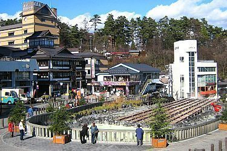
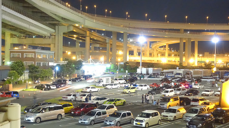

LEISURE TIME
At 8:00 AM, we must be in the restaurant having breakfast, because at 10:00 AM, starts an event in a park of Tokyo for drift, the Daikoku Futo. In this site, people meet in the parking, and later, they prepare a circuit for drift. Unfortunately, we can't
do drift, but we can ride in other people's car as a passenger to enjoy the adrenaline. Around 12:00 PM, we'll eat in a restaurant next to the park. After spending the morning and part of the afternoon there, we have a special route to
return to the city, we are going to pass through Gunma-Ken, Gunma-Ken is a mountain that leads to Tokio city, on this mountain, people used to come and practice drifting when it was "ilegal", also this mountain has wonderful views, so
we can stop and enjoy it, we have to be at the hotel at 8:00PM,since at that time they have dinner at the hotel restaurant.

